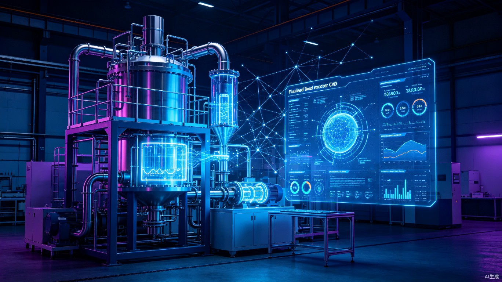

AI驱动的硅碳负极材料CVD工艺研发管理平台 — 从实验数据管理到智能工艺优化的全链路解决方案
《硅碳智造》是一款面向硅碳负极材料研发团队的智能管理平台，覆盖设备台账、工艺参数、检测数据、批次追溯、质量分析到AI预测的完整链路。
系统采用经典分层架构，从表现层到技术栈层逐级支撑，AI核心引擎贯穿数据层与分析层。
graph TB
subgraph L1["表现层 — Flet UI"]
A[智能工作台
仪表盘+AI助手]
B[设备管理]
C[工艺管理]
D[检测项目管理]
E[批次全链路管理]
end
subgraph L2["数据层"]
F[数据查询中心
多维度检索]
G[交互式可视化
自选数据+图表]
H[SPC质量监控
控制图+CPK]
I[DOE实验设计
正交分析]
end
subgraph L3["AI 核心引擎"]
J["工艺参数智能推荐
贝叶斯优化"]
K["产品质量预测
端到端ML"]
L["异常检测与预警
Isolation Forest"]
M["相关性分析
热力图+Pearson"]
end
subgraph L4["技术栈"]
N[Flet]
O[SQLite]
P[Plotly]
Q[scikit-learn]
R[Pandas]
end
L1 --> L2 --> L3
L3 --> L4
style L1 fill:#EDE9FE,stroke:#4B3FE3,color:#1A1759
style L2 fill:#E0F2FE,stroke:#0EA5E9,color:#0C4A6E
style L3 fill:#D1FAE5,stroke:#10B981,color:#064E3B
style L4 fill:#FEF3C7,stroke:#F59E0B,color:#78350F
每个模块围绕硅碳负极CVD工艺的实际研发场景设计，确保功能贴合一线工程师的真实需求。
系统入口，集成关键指标仪表盘（首效趋势、产能统计、异常批次计数）、AI自然语言查询入口和待办提醒，实现一目了然的全局掌控。
维护设备台账（编号、类型、子类），支持流化床（DN100~DN1000）和转炉（40/60/70/80）两大设备体系，设备类型与子类均可增删改查。
分别设置流化床和转炉的CVD工艺参数模板，支持参数范围校验和历史最优值追踪，为批次生产提供标准化工艺基准。
维护原材料（PSD、BET、电阻率等17项）、流化床产物（首效、碳含量、BET等20项）和二包产物的检测项目，分组管理，灵活增删改查。
维护客户、产品、批次号，选择工艺路线（流化床单工段 / 流化床+二包双工段），录入原料数据、工艺参数和测试结果，实现批次全生命周期追溯。
多维度组合查询（按客户+产品+时间+性能范围等），支持数据导出Excel/CSV，满足研发报表和审计追溯需求。
交互式可视化（自选数据绘图）、SPC统计过程控制（X-bar R控制图、CPK分析）、DOE正交实验分析，以及四大AI引擎驱动智能决策。
覆盖硅碳负极材料从原料入厂到产物出厂的全流程检测指标，支持按组分类管理。
| 项目 | 单位 | 说明 |
|---|---|---|
| PSD_D0 / D10 / D50 / D90 / D99 / D100 | μm | 粒径分布百分位 |
| BET | m²/g | 比表面积 |
| PV | cc/g | 孔容积 |
| APD | nm | 平均孔径 |
| 水分 | % | 含水率 |
| 氧含量 | % | 表面氧含量 |
| 振实密度 | g/cm³ | 振实堆积密度 |
| 4MPa / 10MPa / 20MPa 电阻 | Ω·cm | 不同压力下电阻率 |
| 灰分 | % | 无机杂质含量 |
| 磁性物质 | ppm | 铁磁性杂质 |
| 项目 | 单位 | 说明 |
|---|---|---|
| 45℃ 产气 | ml/g | 产气性能 |
| 10MPa 电阻率 | Ω·cm | 高压电阻 |
| 振实密度 | g/cm³ | 堆积密度 |
| 碳含量 | % | 碳包覆量 |
| BET | m²/g | 比表面积 |
| 磁性物质 | PPM | 铁磁性杂质 |
| O含量 | % | 氧含量 |
| 水含量 | ppm | 微量水分 |
| PSD_Dn10 / D0 / D10 / D50 / D90 / D100 | μm | 粒径分布 |
| 首次可逆容量 | mAh/g | 电化学容量 |
| 首效 | % | 首次库仑效率 |
| 0.8V 容量 | mAh/g | 低压段容量 |
| 0.8V 首效 | % | 低压段首效 |
AI不是噱头，而是深度嵌入工艺研发全流程的核心能力。四大引擎协同工作，形成"数据采集 → 特征分析 → 智能推荐 → 异常预警"的闭环。
基于历史批次数据训练ML回归模型（随机森林/XGBoost），结合贝叶斯优化，根据目标产品性能反向推荐最佳工艺参数组合，减少试错次数。
建立"原料参数 + 工艺参数 → 产物性能"的端到端预测模型，在生产前即可预估首效、容量等关键指标，实现质量的"前置管理"。
采用 Isolation Forest 无监督算法自动识别偏离正常分布的批次数据，结合 Z-Score 统计控制，在质量异常扩大前发出预警。
通过 Pearson / Spearman 相关性计算和热力图可视化，揭示原料指标与产物性能之间的深层关联，为工艺优化提供数据依据。
内置专业质量分析工具，让工程师无需切换软件即可完成标准化的质量分析和实验设计。
从创建批次到完成分析，每一步数据都留痕可追溯，确保产品质量的全流程管控。
录入客户、产品名称、批次号，选择工艺路线（流化床单工段 / 流化床+二包双工段）
填入原材料检测数据（PSD、BET、电阻率、灰分等17项），系统自动校验数据范围
依据选定工艺路线录入流化床/转炉的实际运行参数，系统对比标准工艺模板
录入流化床产物和/或二包产物的测试结果（首效、容量、BET等20项）
系统自动运行异常检测、质量预测和相关性分析，异常结果实时推送预警
工程师可对批次数据进行SPC控制图分析和正交实验设计，输出专业质量报告
选用轻量高效的Python技术栈，兼顾开发速度和运行性能，实现跨平台桌面部署。
Flet 是一个用 Python 构建 UI 的跨平台框架，底层由 Flutter 渲染引擎驱动，支持 Windows / macOS / Linux 桌面端和 Web 端部署。与 50+ Python 科学计算库深度兼容，天然适合数据密集型应用[1][2]。
作为轻量级嵌入式数据库，SQLite 无需额外安装和配置，单文件存储，非常适合桌面应用和 Demo 演示场景。支持标准 SQL，满足关系型数据查询需求。
Python 机器学习生态的事实标准，提供随机森林、XGBoost 兼容接口、Isolation Forest、PCA 等丰富的算法库，API 简洁，与 Pandas 无缝衔接。
# 《硅碳智造》项目结构 silicon_carbon_smart/ ├── main.py # 应用入口 ├── config/ │ └── settings.py # 全局配置 ├── models/ │ ├── database.py # SQLite 连接与表创建 │ ├── equipment.py # 设备数据模型 │ ├── process.py # 工艺参数模型 │ ├── test_item.py # 检测项目模型 │ └── batch.py # 批次数据模型 ├── views/ │ ├── workbench.py # 智能工作台 │ ├── equipment_view.py # 设备管理界面 │ ├── process_view.py # 工艺管理界面 │ ├── test_item_view.py # 检测项目界面 │ ├── batch_view.py # 批次管理界面 │ ├── data_query.py # 数据查询界面 │ └── analysis_view.py # 分析+预测界面 ├── ai/ │ ├── param_recommender.py # 工艺参数推荐 │ ├── quality_predictor.py # 质量预测 │ ├── anomaly_detector.py # 异常检测 │ └── correlation.py # 相关性分析 ├── utils/ │ ├── spc.py # SPC 统计过程控制 │ ├── doe.py # DOE 正交实验设计 │ └── export.py # Excel/CSV 导出 └── assets/ └── icon/ # 图标资源
区别于通用MES系统，《硅碳智造》在硅碳负极CVD细分领域实现了深度场景化和AI原生化。
建立"原料特性 → 工艺参数 → 产物性能"的端到端数据关联链，这是通用MES系统无法做到的。研发工程师可以直观看到每个工艺参数对最终首效、容量的影响权重。
不是简单的图表展示，而是真正实现"设定目标性能 → AI推荐参数 → 执行生产 → 反馈数据 → 模型迭代"的智能闭环，让每一炉生产都在为模型"喂料"。
从原材料入厂检测到最终产物性能测试，每个环节的数据都关联到批次维度。一旦出现异常，可以快速追溯到原料批次、工艺偏差环节，实现精准的质量归因。
大赛评审从创新性（30%）、实用性（25%）、完成度（25%）、AI融合度（20%）四个维度评分[3]。
| 优先级 | 模块 | 原因 | 预估工时 |
|---|---|---|---|
| P0 | 设备管理 + 工艺管理 + 检测项目 | 基础数据维护，其他模块的前置依赖 | 3天 |
| P0 | 批次管理 | 核心业务流程，Demo必须可体验 | 3天 |
| P1 | 数据查询中心 | 展示数据管理能力 | 1天 |
| P1 | 交互式可视化 | 选数据绘图表，直观展示数据价值 | 2天 |
| P2 | SPC 质量监控 | 专业质量工具，拉开差异化 | 2天 |
| P2 | AI 智能预测引擎 | 核心AI亮点，评审重点关注 | 3天 |
| P3 | DOE实验设计 + AI助手 | 锦上添花，复赛阶段完善 | 2天 |